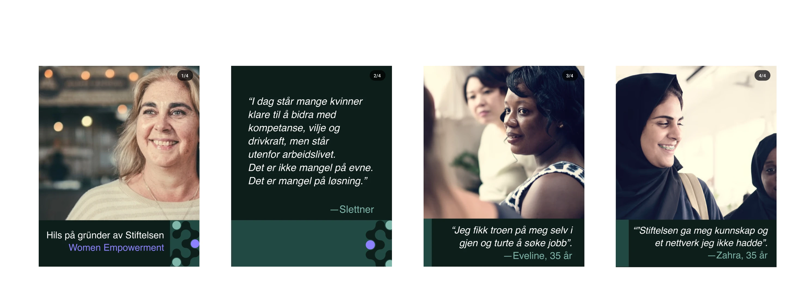

Stiftelsen WE
Utvikling av en helhetlig visuell identitet for Women Empowerment — en nyetablert sosial stiftelse som bygger broer mellom næringsliv og sosialt entreprenørskap.
00
Oppdragsgiver
Stiftelsen WE (Women Empowerment) er en sosial stiftelse grunnlagt av Ragnhild Slettner og Kirstine Holst. Den arbeider for å skape nye veier inn i arbeidslivet for kvinner uten utdanning, arbeidserfaring eller nettverk, gjennom samarbeid med næringslivet.
WE fungerer som en brobygger mellom næringsliv og sosialt entreprenørskap, ved å koble virksomheter med sosiale entreprenører og følge opp resultatene over tid.
Oppdraget ble gitt uten en fastsatt visuell retning, noe som ga stort strategisk handlingsrom, men også krevde egne valg og tett dialog underveis.

01
Prosess
02
Fargepalett
Den dype grønne paletten symboliserer natur, trygghet og bærekraft, mens violetten tilfører energi og kontrast.
03
Bildebruk


Vi har valgt å hovedsakelig benytte bilder av kvinner, ofte i form av portretter eller i arbeidssituasjoner. Dette er et bevisst valg for å tydeliggjøre målgruppen og gjøre innholdet mer relevant og relaterbart for brukeren. Den konsistente bildebruken bidrar samtidig til å etablere en tydelig visuell identitet og skape en helhetlig sammenheng i designet.
Bilder hentet fra Adobe Stock
04
Logo

Denne logoen er valgt som primærlogo fordi den tydelig representerer Stiftelsen WE. De avrundede formene uttrykker fellesskap og inkludering, mens typografien gir et profesjonelt og tydelig uttrykk


05
Typografi
Trade Gothic Next LT Pro, Bold
Aa BbCc Dd Ee Ff Gg Hh Ii Jj Kk Ll Mm Nn Oo
Pp Qq Rr Ss Tt Uu Vv Ww Xx Yy Zz
0123456789!@#$%^&*( )
Trade Gothic Next LT Pro, Heavy
Aa BbCc Dd Ee Ff Gg Hh Ii Jj Kk Ll Mm Nn Oo
Pp Qq Rr Ss Tt Uu Vv Ww Xx Yy Zz
0123456789!@#$%^&*( )
Helvetica, Regular
Aa BbCc Dd Ee Ff Gg Hh Ii Jj Kk Ll Mm Nn Oo
Pp Qq Rr Ss Tt Uu Vv Ww Xx Yy Zz
0123456789!@#$%^&*( )
Helvetica, Oblique
Aa BbCc Dd Ee Ff Gg Hh Ii Jj Kk Ll Mm Nn Oo
Pp Qq Rr Ss Tt Uu Vv Ww Xx Yy Zz
0123456789!@#$%^&*( )
06
Mønster


Det organiske mønsteret er utviklet som en visuell metafor for nettverk, samarbeid og vekst. De sammenkoblede formene representerer relasjonene mellom kvinner, næringsliv og sosiale entreprenører, hvor stiftelsen fungerer som et bindeledd. Variasjonen i størrelse og struktur symboliserer mangfoldet av bakgrunner og forutsetninger, mens de tydelige nodene fremhever individer og muligheter som løftes frem. Samtidig balanserer det myke, menneskelige uttrykket med en systematisk oppbygning, noe som reflekterer både det sosiale formålet og profesjonaliteten rettet mot næringslivet.
07
Design

